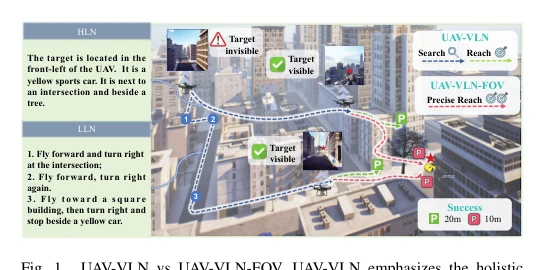
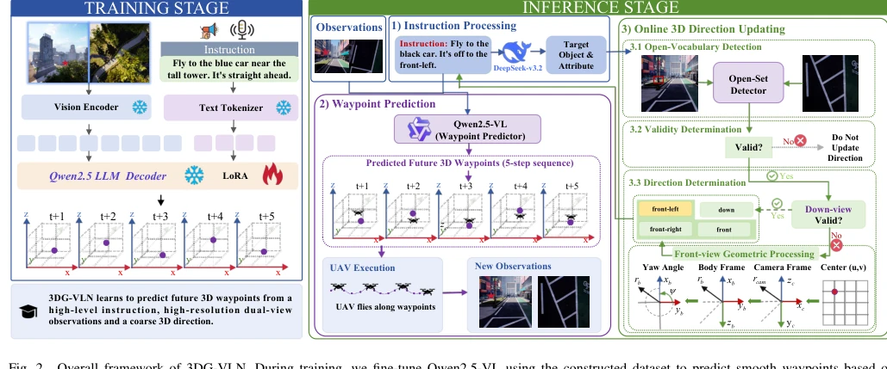
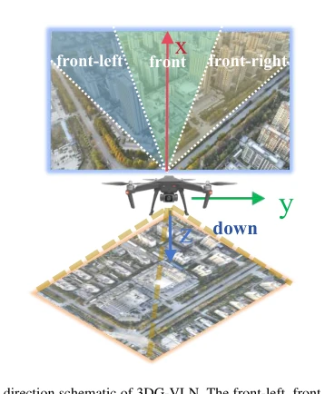
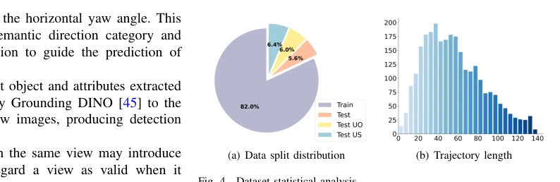
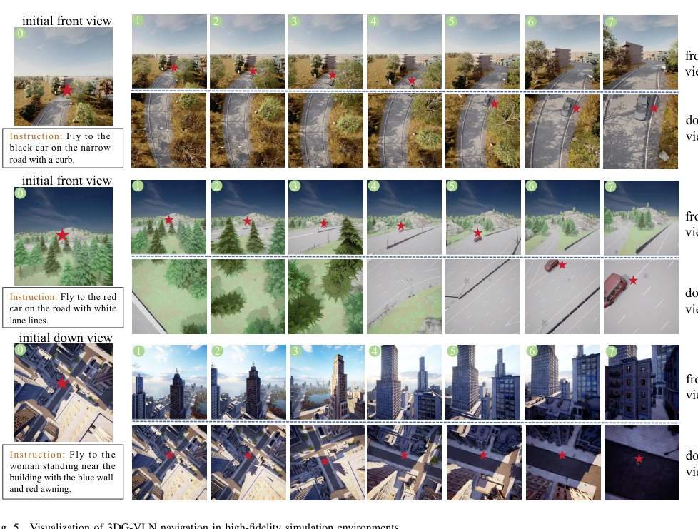
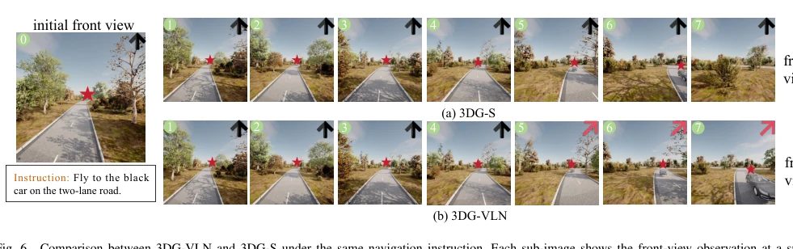
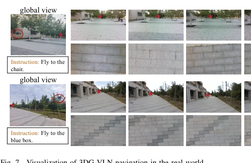

This paper attempts to deliver a "dimensionality reduction attack" on UAV navigation, decomposing the grand search task into a refined "see-then-arrive" phase. The authors keenly pointed out the absurdity of the 20-meter success radius of existing benchmarks (such as OpenUAV [5])—in disaster relief delivery scenarios, this is simply "a miss of a hair's breadth, a thousand miles of error". The proposed 3DG-VLN framework, utilizing high-resolution dual views and dynamic direction updates, indeed improves accuracy. But ironically, this strong dependence on high resolution and online detection may make the model unrunnable on compute-constrained embedded drones. Furthermore, real-world experiments are merely brushed aside as a "proof of potential", lacking detailed performance comparison data, inevitably raising suspicion of whether it is merely an "overfitting" variant of the simulation environment, after all the domain gap between simulation and reality remains huge, and real-time overhead is not mentioned, for actual deployment, this might just be a "precise performance" in the laboratory.
Existing UAV-VLN research [5][8] generally treats navigation as an overall "search-arrival" process, leading to terminal arrival accuracy being masked by exploration errors. For example, OpenUAV [5] adopts a loose 20-meter success radius, which is completely unacceptable in high-risk tasks such as emergency supply delivery, where a 20-meter deviation could lead to task failure. Furthermore, existing methods mostly rely on static initial direction hints, as the UAV moves, cumulative spatial drift will cause severe misalignment between semantic instructions and visual perspectives. Therefore, there is an urgent need for a task definition that isolates the "see-arrival" phase, and establish a stricter 10-meter accuracy standard, to evaluate the embodied agent's fine spatial alignment and motion control capabilities after the target is visible, filling the diagnostic gap in terminal accuracy in the current evaluation system, solving the transition difficulty from semantic exploration to geometric precision.

Fig. 1. UAV-VLN vs UAV-VLN-FOV. UAV-VLN emphasizes the holistic search-and-reach process, whereas UAV-VLN-FOV focuses on the see-and- reach stage.
方法Method
3DG-VLN 是一个基于视觉 - 语言模型的航点预测框架。整体流程分为训练与推理两阶段。训练时，利用 LoRA 微调 Qwen2.5-VL，输入为指令、高分辨率正/下视图像及初始 3D 方向提示，输出为相对机身坐标系的 3D 航点序列。推理时，引入在线 3D 方向更新模块。该模块利用检测器在前视和下视图像中检测目标，根据检测优先级（下视优先）动态更新离散的方向提示（如 front-left, down 等）。更新后的方向提示与观测融合，指导后续航点预测。核心创新在于放弃了传统降采样，保留高分辨率细节以支持精细视觉定位，并通过闭环中的方向重估缓解累积漂移，确保无人机在复杂环境中能持续对齐目标，实现从语义到几何的精确映射，同时通过机身坐标系转换保证平移旋转不变性。
3DG-VLN is a waypoint prediction framework based on a Vision-Language Model. The overall process is divided into training and inference phases. During training, LoRA is used to fine-tune Qwen2.5-VL, inputs are instructions, high-resolution front/down-view images, and initial 3D direction hints, outputs are 3D waypoint sequences relative to the body frame. During inference, an online 3D direction update module is introduced. This module uses a detector to detect targets in front-view and down-view images, dynamically updating discrete direction hints (such as front-left, down, etc.) based on detection priority (down-view priority). Updated direction hints are fused with observations to guide subsequent waypoint prediction. The core innovation lies in abandoning traditional downsampling, retaining high-resolution details to support fine visual localization, and alleviating cumulative drift through direction re-evaluation in the closed loop, ensuring the UAV can continuously align with the target in complex environments, achieving precise mapping from semantics to geometry, while ensuring translation and rotation invariance through body frame coordinate transformation.

Fig. 2. Overall framework of 3DG-VLN. During training, we fine-tune Qwen2.5-VL using the constructed dataset to predict smooth waypoints based on instructions and observations. During inference, 3DG-VLN leverages the fine-tuned Qwen2.5-VL for waypoint prediction, DeepSeek V3.2 for extracting target

Fig. 3. 3D direction schematic of 3DG-VLN. The front-left, front, front-right, and down bins describe the target’s relative position in the UAV-centric body frame, where the x, y, and z axes denote front, right, and down, respectively.
Constructed a high-resolution UAV-VLN-FOV benchmark containing 2,717 trajectories, covering 14 scenes. On the test set, compared to the SOTA baseline TravelUAV [5], 3DG-VLN increased Success Rate (SR) from 25.00% to 38.82%, Navigation Error (NE) reduced to 24.41 meters, and SPL also saw significant improvement. Ablation experiments show that high-resolution input contributes significantly to SR improvement (about 15%), online direction update also effectively reduced spatial drift. Although robust on unseen objects and scenes, compared to TravelUAV, its computational complexity may be higher. Real-world experiments demonstrated the model's feasibility in physical environments, but specific deployment details were not detailed, only as a proof of potential, still needs more data to verify its generalization ability, and no comparison with similar high-resolution methods was mentioned, making it difficult to completely exclude the contribution of the model architecture itself.

Fig. 4. Dataset statistical analysis.

Fig. 5. Visualization of 3DG-VLN navigation in high-fidelity simulation environments.

Fig. 6. Comparison between 3DG-VLN and 3DG-S under the same navigation instruction. Each sub-image shows the front-view observation at a specific timestep, and the arrow in the upper-right corner indicates the current direction cue, where ↑denotes front and ↗denotes front-right.

Fig. 7. Visualization of 3DG-VLN navigation in the real world.